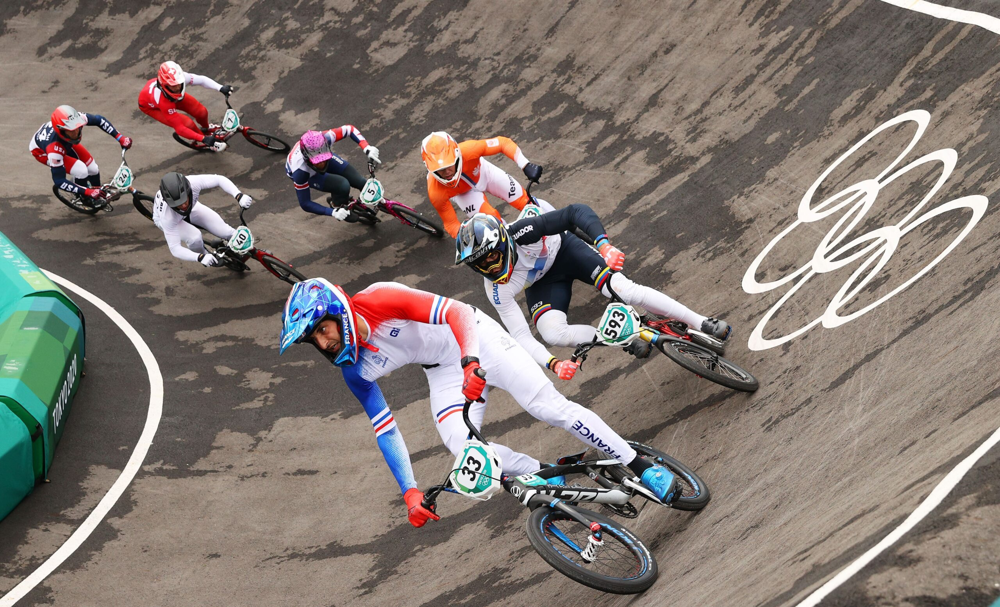
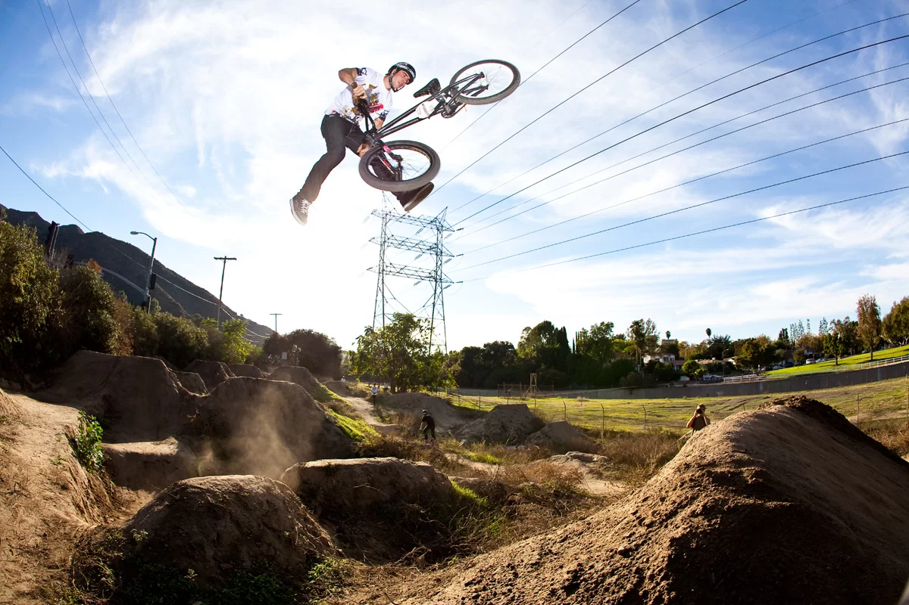
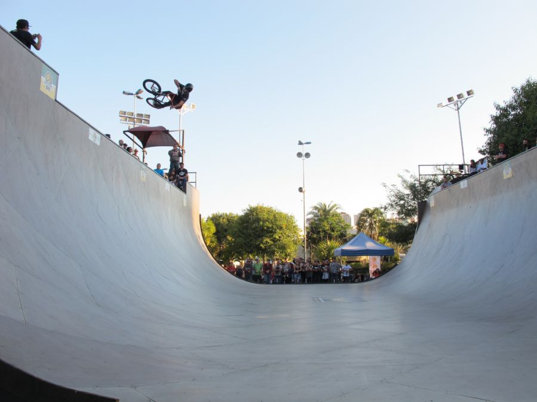
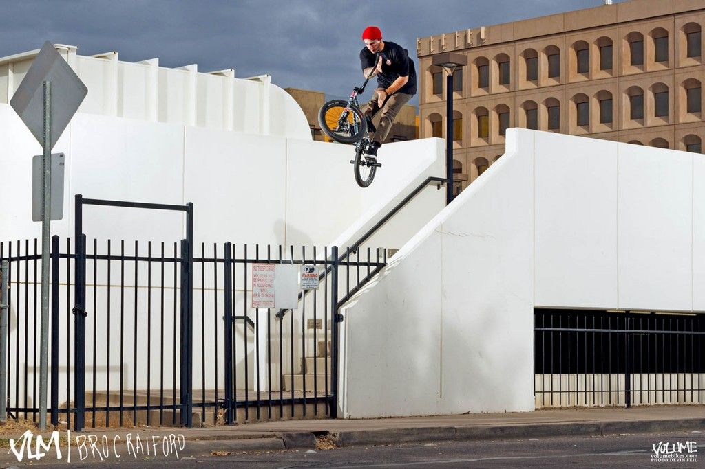

MODALIDADES
Como visto anteriormente, o BMX se divide em duas modalidades, o BMX Racing (Corrida) e o BMX Freestyle (Manobras), no mundo do Freestyle, existem diversas outras modalidades diferenciadas pelo local e forma como são executadas as manobras. Aqui vai um resumo com todas as informações que você precisa saber sobre os diferentes e únicos estilos que compõem esse esporte olímpico.
RACING
O BMX racing envolve até oito ciclistas de BMX competindo em uma pista de uma volta com retas, saltos e curvas. O primeiro a cruzar a linha de chegada vence a corrida. As principais regras do esporte estão relacionadas com os equipamentos de segurança, tamanhos das bicicletas, limites de faixa etária e como os ciclistas avançam nas provas. As competições geralmente são realizadas em 'motos', ou baterias, com até 8 pilotos de cada vez. As eliminatórias podem ser de eliminação simples, com os primeiros colocados avançando para a próxima fase, ou uma série de corridas com pontos atribuídos de acordo com a posição de chegada.
Foi em 2008, em Pequim, que o BMX racing fez sua estreia no programa olímpico. A prova masculina foi vencida pelo letão Maris Strombergs. No evento feminino, foi a francesa Anne-Caroline Chausson quem conquistou o primeiro título olímpico nesta modalidade.
O BMX racing é uma das disciplinas de ciclismo mais rápidas e mais recentes. Seu princípio é simples: oito pilotos competem em uma pista repleta de saltos, curvas fechadas e obstáculos. Está no programa olímpico desde sua estreia.
FREESTYLE
O BMX Freestyle vem ganhando popularidade nos últimos tempos. Afinal, há cada vez mais pessoas adeptas a esportes radicais. Então, se você curte saltos e manobras inacreditáveis com bicicleta, precisa saber mais sobre essa modalidade. No Brasil, o BMX chegou em 1978, quando o Bicicross já estava ganhando destaque. Vale ressaltar que essa atividade tem como principal marca o radical e a adrenalina. Dessa forma, para praticar o BMX Freestyle é necessário:
- Coragem
- Disciplina
- Treino
- E principalmente, uma boa dose de ousadia.
Os esportistas levam muito a sério essa atividade, para que suas manobras saiam perfeitas. Aliás, elas são feitas usando bicicletas aro 20″. Logo, estão sempre desafiando a gravidade, com saltos e giros inacreditáveis no ar. Além disso, ele é dividido em 5 modalidades. Logo, o que os diferencia é o local, bem como a forma com que as manobras são realizadas. Por isso, veja a seguir as principais delas:
DIRT JUMP
O Dirt Jump é uma das cinco modalidades do BMX, praticado em rampas de terra e com manobras de impressionar qualquer um. É um dos estilos mais difíceis, sendo preciso ter muita coragem, habilidade e persistência no processo de aprendizado. Caracterizado pelo radicalismo, com as manobras de alto risco, o Dirt Jump é uma modalidade muito bacana para assistir. Rola até aquele friozinho na barriga com as sequências de saltos e manobras.
As rampas de terra podem variar de tamanho dependendo da competição, tendo tamanho e distâncias variadas. Também podem ser rampas únicas, doubles ou trails, que são as rampas em sequência. Quanto maior a inclinação de uma rampa, maior o voo e mais tempo entre um salto e outro para o ciclista.
VERTICAL
A rampa usada nessa modalidade é em formato de U, de nome half pipe. Inclusive, sua altura chega a mais de 3 metros. Portanto, o atleta tem que conseguir uma boa velocidade para atingir o topo e executar as manobras. É uma das modalidade mais perigosas e que exige maior nível de treino e concentração do atleta
É possivelmente o estilo de BMX mais conhecido no Brasil, suas manobras livres e rampas insanas trouxeram grande populariadade para esse estilo.
STREET
Nessa modalidade de BMX, o esporte é praticado nas próprias ruas e pistas públicas das cidades. Assim, os obstáculos são simulados usando:
- Bancos
- Escadarias
- Muretas
- Corrimãos
- Paredes inclinadas
As manobras combinam o Dirt, o Vert e o Flatland são executadas ao se transpor algum obstaculo, e o que vale é a criatividade em cada obstáculo encontrado pelas ruas. Vence quem os jurados julgarem como o melhor e mais criativo na realização das manobras
FLATLAND
Flatland é um estilo de pilotagem BMX de estilo livre realizado em superfícies planas e lisas que não incluem rampas, saltos ou trilhos. Às vezes é descrito como uma forma de ciclismo artístico com uma mistura de breakdancing .
Este estilo ocupa uma posição um pouco distante do resto do BMX freestyle. Os entusiastas costumam ser muito dedicados e passam várias horas por dia aperfeiçoando suas técnicas. Também difere dos outros eventos porque o terreno usado nada mais é do que uma superfície lisa e plana. Os truques são executados girando e equilibrando-se na bicicleta em uma variedade de posições inesperadas. Os pilotos quase sempre usam pinos de alumínio ou plástico recartilhados / com fita adesiva para manipular a bicicleta em posições ainda mais imaginativas.
Flatland também difere dos outros eventos porque o terreno usado nada mais é do que uma superfície lisa e plana. Os truques são executados girando e equilibrando-se na bicicleta em uma variedade de posições inesperadas. Os pilotos quase sempre usam pinos de alumínio ou plástico recartilhados / com fita adesiva para manipular a bicicleta em posições ainda mais imaginativas.
- Número de toques: O número de vezes que uma vaza não é completada e/ou o número de toques do pé no chão
- Número de manobras concluídos no tempo alocado
- Dificuldade das manobras.
- Originalidade dos truques executados, que novamente podem ser um tanto subjetivos